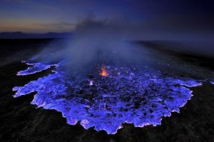
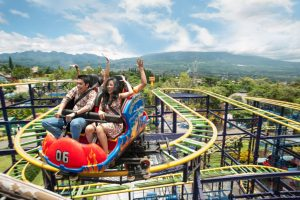
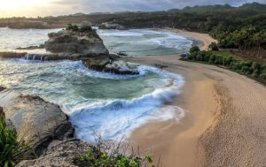
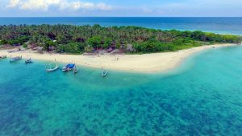
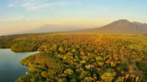
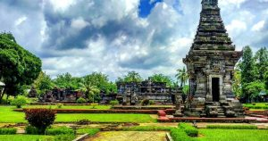
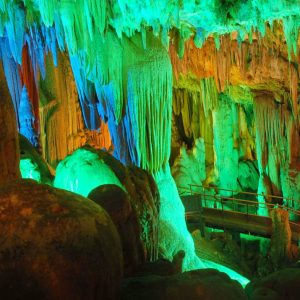
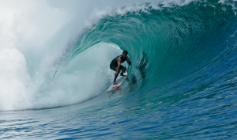
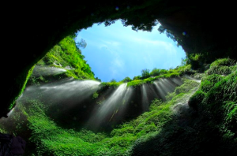

TENTANG
AGENDA
BERITA
INFO PENTING
INFO WISATA JATIM
INSTANSI
Sekretariat Daerah
Sekretariat DPRD
Inspektorat Daerah
Dinas Daerah
Badan Daerah
Kecamatan
Alamat Email OPD
PROFIL KOTA
Tentang Surabaya
People and Culture
Photos Galery
Music Galery
Videos Galery
Practical Info
INFORMASI
Twitter : @SapawargaSby
Instagram : @Sapawargasby
Facebook Fan Page : Sapawarga Kota Surabaya
Website : Media Center Surabaya
Email : Mediacenter@Surabaya.Go.Id
PPID Kota Surabaya
Rekapitulasi Permintaan Informasi / Keluhan Masyarakat
Mobile App E-Wadul
Telepon : Hotline +6231 545-6290 | Toll Free +62-800-1404122
LEARNING CITY
ENVIRONMENTAL LEARNING
CULTURAL LEARNING
PUBLIC SPACE UTILIZATION LEARNING
Tampil Daftar Wisata Jawa Timur
INFO WISATA
1. Gunung Bromo
2. Kawah Ijen
3. Jatim Park
4. Pantai Klayar
5. Gili Labak
6. Taman Nasional Baluran
7. Candi Panataran
8. Gua Gong
9. Pantai Plengkung
10. Air Terjun Madakaripura








